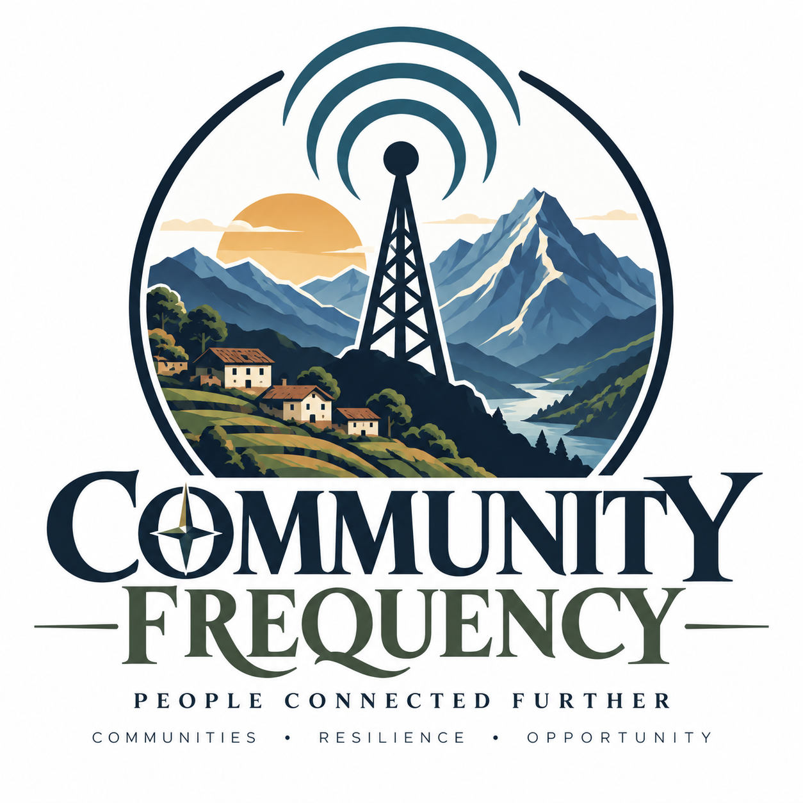

Listen
Understand what people actually need to communicate, how they communicate now, and what matters in the environments involved.

Exploring practical, resilient communications for places where cellular and Internet connectivity does not reach — or is not enough.
Community Frequency asks how communities can maintain basic communications when conventional connectivity is limited, unreliable, or unavailable. We are not starting with a technology. We are starting with the problem.
Understand what people actually need to communicate, how they communicate now, and what matters in the environments involved.
Test communications systems in real conditions and record what happens rather than assuming what should happen.
Keep the successes, failures, limitations, and unanswered questions visible as the evidence develops.
“We’re not going into the field with the answer. We’re going into the field to find out what the answer might be.”
Before considering any remote deployment, Community Frequency is conducting field experiments in Arizona. Current work includes Meshtastic and MeshCore, with attention to direct and relayed communications, multi-hop behavior, repeaters, route learning, mobility, power, and reliability.
The next major step is a planned feasibility mission in Peru. The mission is about listening, observing, measuring, and learning — not arriving with a predetermined network to install.
See the field work